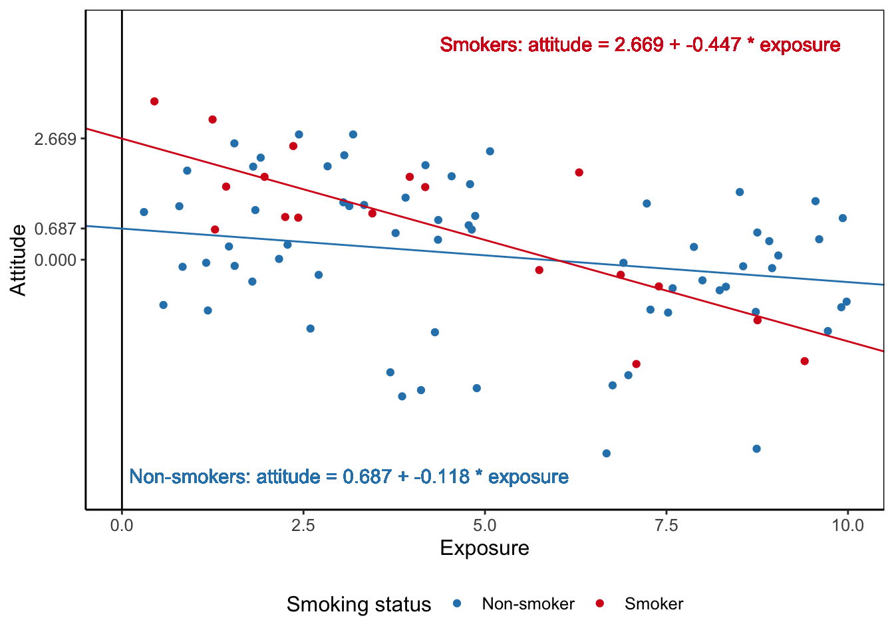

6 Regression Analysis And A Categorical Moderator
Key concepts: regression equation, dummy variables, normally distributed residuals, linearity, homoscedasticity, independent observations, statistical diagram, interaction variable, covariate, common support, simple slope, conditional effect.
Watch this micro lecture on regression analysis with a categorical moderator for an overview of the chapter.
Summary
My dependent variable is numerical but at least one predictor is also numerical, so I cannot apply analysis of variance. How can I investigate moderation with regression analysis?
The linear regression model is a powerful and very popular tool for predicting a numerical dependent variable from one or more independent variables. In this chapter, we use regression analysis to evaluate the effects of an anti-smoking campaign. We predict attitude towards smoking from exposure to the anti-smoking campaign (numerical), time spent with smokers (numerical), and the respondent’s smoking status (categorical).
Regression coefficients, that is, the slopes of regression lines, are the effects in a regression model. They show the predicted difference in the dependent variable for a one unit difference in the independent variable (exposure, time spent with smokers) or the predicted mean difference for two categories (smokers versus non-smokers).
But what if the predictive effect is not the same in all contexts? For example, exposure to an anti-smoking campaign may generally generate a more negative attitude towards smoking. The effect, however, is probably different for people who smoke than for people who do not smoke. In this case, the effect of campaign exposure on attitude towards smoking is moderated by context: Whether or not the person exposed to the campaign is a smoker.
Different effect sizes for different contexts are different regression coefficients for different contexts. We need different regression lines for different groups of people. We can use an interaction variable as an independent variable in a regression model to accommodate for moderation as different effects. An interaction variable is just the product of the predictor variable and the moderator variable.
As an independent variable in the model, the regression coefficient of an interaction variable (interaction effect for short) has a confidence interval and a p value. The confidence interval tells us the plausible values for the size of the interaction effect in the population. The p value tests the null hypothesis that there is no interaction effect at all in the population.
To interpret the interaction effect, we must determine the size of the effect of the predictor on the dependent variable for each group of the moderator. For example, the effect of campaign exposure on smoking attitude for smokers and the effect for non-smokers.
An interaction effect in a regression model closely resembles an interaction effect in analysis of variance. The effect of a single predictor that is involved in an interaction effect in a regression model, however, is not a main effect as in analysis of variance. It is a conditional effect, namely the effect for one particular value of the moderator, that is, the effect within one particular context. To understand this, we must pay close attention to the regression equation.
6.1 The Regression Equation
In the social sciences, we usually expect that a particular outcome has several causes. Investigating the effects of an anti-smoking campaign, for instance, we would not assume that a person’s attitude towards smoking depends only on exposure to a particular anti-smoking campaign. It is easy to think of other and perhaps more influential causes such as personal smoking status, contact with people who do or do not smoke, susceptibility to addiction, and so on.
Warning in geom_segment(aes(x = x[1], y = y[1], xend = x[4] - 0.04, yend = y[4] - : All aesthetics have length 1, but the data has 4 rows.
ℹ Please consider using `annotate()` or provide this layer with data containing
a single row.Warning in geom_segment(aes(x = x[2], y = y[2], xend = x[4] - 0.04, yend = y[4]), : All aesthetics have length 1, but the data has 4 rows.
ℹ Please consider using `annotate()` or provide this layer with data containing
a single row.Warning in geom_segment(aes(x = x[3], y = y[3], xend = x[4] - 0.04, yend = y[4] + : All aesthetics have length 1, but the data has 4 rows.
ℹ Please consider using `annotate()` or provide this layer with data containing
a single row.
Figure 6.1 summarizes some hypothesized causes of the attitude towards smoking. Attitude towards smoking is measured as a scale, so it is a numerical variable. In linear regression, the dependent variable (\(y\)) must be numerical and in principle continuous. There are regression models for other types of dependent variables, for instance, logistic regression for a dichotomous (0/1) dependent variable and Poisson regression for a count dependent variable, but we will not discuss these models.
A regression model translates this conceptual diagram into a statistical model. The statistical regression model is a mathematical function with the dependent variable (also known as the outcome variable, usually referred to with the letter \(y\)) as the sum of a constant, the effects (\(b\)) of independent variables or predictors (\(x\)), which are predictive effects, and an error term (\(e\)), which is also called the residuals, see Equation @ref(eq:regression).
\[\begin{equation} \small y = constant + b_1*x_1 + b_2*x_2 + b_3*x_3 + e (\#eq:regression) \normalsize \end{equation}\]If we want to predict the dependent variable (\(y\)), we ignore the error term (\(e\)) in the equation. The equation without the error term [Eq. @ref(eq:regressionpred)] represents the regression line that we visualize and interpret in the following subsections. We use the error term only when we discuss the assumptions for statistical inference on a regression model in Section 6.1.4.
\[\begin{equation} \small y = constant + b_1*x_1 + b_2*x_2 + b_3*x_3 (\#eq:regressionpred) \normalsize \end{equation}\]6.1.1 A numerical predictor
Let us first have a close look at a simple regression equation, that is, a regression equation with just one predictor (\(x\)). Let us try to predict attitude towards smoking from exposure to an anti-smoking campaign.
Good understanding of the regression equation is necessary for understanding moderation in regression models. So let us have a close look at an example equation [Eq. @ref(eq:regrexample)]. In this example, the dependent variable attitude towards smoking is predicted from a constant and one independent variable, namely exposure to an anti-smoking campaign.
\[\begin{equation} \small attitude = constant + b*exposure (\#eq:regrexample) \normalsize \end{equation}\]The constant is the predicted attitude if a person scores zero on all independent variables. To see this, plug in (replace) zero for the predictor in the equation (Eq. @ref(eq:regsmokedummy)) and remember that zero times something yields zero. This reduces the equation to the constant.
\[\begin{equation} \small \begin{split} attitude &= constant + b*0 \\ attitude &= constant + 0 \\ attitude &= constant \end{split} (\#eq:regsmokedummy) \normalsize \end{equation}\]For all persons scoring zero on exposure, the predicted attitude equals the value of the regression constant. This interpretation only makes sense if the predictor can be zero. If, for example, exposure had been measured on a scale ranging from one to seven, nobody can have zero exposure, so the constant has no straightforward meaning.
The unstandardized regression coefficient \(b\) represents the predicted difference in the dependent variable for a difference of one unit in the independent variable. For example, plug in the values 1 and 0 for the exposure variable in the equation. If we take the difference of the two equations, we are left with \(b\). Other terms in the two equations cancel out.
\[\begin{equation} \small \begin{split} attitude = constant + b*1 \\ \underline{- \mspace{20mu} attitude = constant + b*0} \\ attitude \mspace{4mu} difference = b*1 - b*0 = b - 0 = b \end{split} (\#eq:regweight) \normalsize \end{equation}\]The unstandardized regression coefficient \(b\) represents the predicted difference in the dependent variable for a difference of one unit in the independent variable.
It is the slope of the regression line.
Whether this predicted difference is small or large depends on the practical context. Is the predicted decrease in attitude towards smoking worth the effort of the campaign? In the example shown in Figure 6.2, one additional unit of exposure decreases the predicted attitude by 0.6. This seems to be quite a substantial change on a scale from -5 to 5.
In the data, the smallest exposure score is (about) zero, predicting a positive attitude of 1.6. The largest observed exposure score is around eight, predicting a negative attitude of -3.2. If exposure causes the predicted differences in attitude, the campaign would have interesting effects. It may change a positive attitude into a rather strong negative attitude.
If we want to apply a rule of thumb for the strength of the effect, we usually look at the standardized regression coefficient (\(b^*\) according to APA, Beta in SPSS output). See Section 4.2.8.2 for some rules of thumb for effect size interpretation.
Note that the regression coefficient is calculated for predictor values that occur within the data set. For example, if the observed exposure scores are within the range zero to eight, these values are used to predict attitude towards smoking.
We cannot see this in the regression equation, which allows us to plug in -10, 10, or 100 as exposure values. But the values for attitude that we predict from these exposure values are probably nonsensical (if possible at all: -10 exposure?) Our data do not tell us anything about the relation between exposure and anti-smoking attitude for predictor values outside the observed zero to eight range. We should not pretend to know the effects of exposure levels outside this range. It is good practice to check the actual range of predictor values.
6.1.2 Dichotomous predictors
Instead of a numerical independent variable, we can use a dichotomy as an independent variable in a regression model. The dichotomy is preferably coded as 1 versus 0, for example, 1 for smokers and 0 for non-smokers among our respondents.
The interpretation of the effect of a dichotomous independent variable in a regression model is quite different from the interpretation of a numerical independent variable’s effect.
It does not make sense to interpret the unstandardized regression coefficient of, for example, smoking status as predicted difference in attitude for a difference of one ‘more’ smoking status. After all, the 0 and 1 scores do not mean that there is one unit ‘more’ smoking. Instead, the coefficient indicates that we are dealing with different groups: smokers versus non-smokers.
If smoking status is coded as smoker (1) versus non-smoker (0), we effectively have two versions of the regression equation. The first equation @ref(eq:regdicho1) represents all smokers, so their smoking status score is 1. The smoking status of this group has a fixed contribution to the predicted average attitude, namely \(b\).
\[\begin{equation} \small \begin{split} attitude &= constant + b*status \\ attitude_{smokers} &= constant + b*1 \\ attitude_{smokers} &= constant + b \end{split} (\#eq:regdicho1) \normalsize \end{equation}\]Regression equation @ref(eq:regdicho0) represents all non-smokers. Their smoking status score is 0, so the smoking status effect drops from the model.
\[\begin{equation} \small \begin{split} attitude &= constant + b*status \\ attitude_{non-smokers} &= constant + b*0 \\ attitude_{non-smokers} &= constant + 0 \end{split} (\#eq:regdicho0) \normalsize \end{equation}\]If you compare the final equations for smokers [Eq. @ref(eq:regdicho1)] and non-smokers [Eq. @ref(eq:regdicho0)], the only difference is \(b\), which is present for smokers but absent for non-smokers. It is the difference between the average score on the dependent variable (attitude) for smokers and the average score for non-smokers. We are testing a mean difference. Actually, this is exactly the same as an independent-samples t test!
The unstandardized regression coefficient for a dummy (0/1) variable represents the difference between the average outcome score of the group coded as ‘1’ and the average outcome score of the group coded as ‘0’.
Imagine that \(b\) equals 1.6. This indicates that the average attitude towards smoking among smokers (coded ‘1’) is 1.6 units above the average attitude among non-smokers (coded ‘0’). Is this a small or large effect? In the case of a dichotomous independent variable, we should not use the standardized regression coefficient to evaluate effect size. The standardized coefficient depends on the distribution of 1s and 0s, that is, which part of the respondents are smokers. But this should be irrelevant to the size of the effect.
Therefore, it is recommended to interpret only the unstandardized regression coefficient for a dichotomous independent variable. Interpret it as the difference in average scores for two groups.
6.1.3 A categorical independent variable and dummy variables
How about a categorical variable containing three or more groups, for example, the distinction between respondents who smoke (smokers), stopped smoking (former smokers), and respondents who never smoked (non-smokers)? Can we include a categorical variable as an independent variable in a regression model? Yes, we can but we need a trick.
In this example, smoking status is measured with three categories: (1) non-smokers, (2) former smokers, and (3) smokers. Let us use the term categorical variable only for variables containing three or more categories or groups. This makes it easy to distinguish them from dichotomous variables. This distinction is important because we can include a dichotomous variable straight away as a predictor in a regression model but we cannot do so for a variable with more than two categories. We can only include such a categorical independent variable if we change it into a set of dichotomies.
We can create a new dichotomous variable for each group, indicating whether (score 1) or not (score 0) the respondent belongs to this group. In the example, we could create the variables neversmoked, smokesnomore, and smoking. Every respondent would score 1 on one of the three variables and 0 on the other two variables (Table 6.1). These variables are called dummy variables or indicator variables.
| Original categorical variable: | neversmoked | smokesnomore | smoking |
|---|---|---|---|
| 1 - Non-smoker | 1 | 0 | 0 |
| 2 - Former smoker | 0 | 1 | 0 |
| 3 - Smoker | 0 | 0 | 1 |
If we want to include a categorical independent variable in a regression model, we must use all dummy variables as independent variables except one. In the example, we must include two out of the three dummy variables. Equation @ref(eq:regcat) includes dummy variables for former smokers (\(smokesnomore\)) and smokers (\(smoking\)).
Include dummy variables as independent variables for all except one categories of a categorical variable.
The category without dummy variable is the reference group.
The two dummy variables give us three different regression equations: one for each smoking status category. Just plug in the correct 0 or 1 values for respondents with a particular smoking status.
Let us first create the equation for non-smokers. To this end, we replace both \(smokesnomore\) and \(smoking\) by 0. As a result, both dummy variables drop from the equation [Eq. @ref(eq:regcat1)], so the constant is the predicted attitude for non-smokers. The non-smokers are our reference group because they are not represented by a dummy variable in the equation.
\[\begin{equation} \small \begin{split} attitude &= constant + b_1*smokesnomore + b_2*smoking \\ attitude_{non-smokers} &= constant + b_1*0 + b_2*0 \\ attitude_{non-smokers} &= constant \end{split} (\#eq:regcat1) \normalsize \end{equation}\]For former smokers, we plug in 1 for \(smokesnomore\) and 0 for \(smoking\). The predicted attitude for former smokers equals the constant plus the unstandardized regression coefficient for the \(smokesnomore\) dummy variable (\(b_1\)), see Equation @ref(eq:regcat2). Remember that the constant represents the non-smokers (reference group), so the unstandardized regression coefficient \(b_1\) for the \(smokesnomore\) dummy variable shows us the difference between former smokers and non-smokers: How much more positive or more negative the average attitude towards smoking is among former smokers than among non-smokers.
\[\begin{equation} \small \begin{split} attitude &= constant + b_1*smokesnomore + b_2*smoking \\ attitude_{former smokers} &= constant + b_1*1 + b_2*0 \\ attitude_{former smokers} &= constant + b_1 \end{split} (\#eq:regcat2) \normalsize \end{equation}\]Finally, for smokers, we plug in 0 for \(smokesnomore\) and 1 for \(smoking\) [Eq. @ref(eq:regcat3)]. The predicted attitude for smokers equals the constant plus the unstandardized regression coefficient for the \(smoking\) dummy variable (\(b_2\)). This regression coefficient, then, represents the difference in average attitude between smokers and non-smokers (reference group).
\[\begin{equation} \small \begin{split} attitude &= constant + b_1*smokesnomore + b_2*smoking \\ attitude_{smokers} &= constant + b_1*0 + b_2*1 \\ attitude_{smokers} &= constant + b_2 \end{split} (\#eq:regcat3) \normalsize \end{equation}\]The interpretation of the effects (regression coefficients) for the included dummies is similar to the interpretation for a single dichotomous independent variable such as smoker versus non-smoker. It is the difference between the average score of the group coded 1 on the dummy variable and the average score of the reference group on the dependent variable. The reference group is the group scoring 0 on all dummy variables that represent the categorical independent variable.
If we exclude the dummy variable for the respondents who never smoked, as in the above example, the regression weight of the dummy variable \(smokesnomore\) gives the average difference between former smokers and non-smokers. If the regression weight is negative, for instance -0.8, former smokers have on average a more negative attitude towards smoking than non-smokers. If the difference is positive, former smokers have on average a more positive attitude towards smoking.
Which group should we use as reference category, that is, which group should not be represented by a dummy variable in the regression model? This is hard to say in general. If one group is of greatest interest to us, we could use this as the reference group, so all dummy variable effects express differences with this group. Alternatively, if we expect a particular ranking of the average scores, we may pick the group at the highest, lowest or middle rank as the reference group. If you can’t decide, run the regression model several times with a different reference group.
Finally, note that we should not include all three dummy variables in the regression model [Eq. @ref(eq:regcat)]. We can already identify the non-smokers, because they score 0 on both the \(smokesnomore\) and \(smoking\) dummy variables. Adding the \(neversmoked\) dummy variable to the regression model is like including the same independent variable twice. How can the estimation process decide which of the two identical independent variable is responsible for the effect? It can’t decide, so the estimation process fails or it drops one of the dummy variables. If this happens, the independent variables are said to be perfectly multicollinear.
6.1.4 Sampling distributions and assumptions
If we are working with a random sample or we have other reasons to believe that our data could have been different due to chance (Section 4.7.4), we should not just interpret the results for the data set that we collected. We should apply statistical inference—confidence intervals and significance tests—to our results. The confidence interval gives us bounds for plausible population values of the unstandardized regression coefficient. The p value is used to test the null hypothesis that the unstandardized regression coefficient is zero in the population.
Each regression coefficient as well as the constant may vary from sample to sample drawn from the same population, so we should devise a sampling distribution for each of them. These sampling distributions happen to have a t distribution under particular assumptions.
Chapters Chapter 3 and Chapter 4 have extensively discussed how confidence intervals and p values are constructed and how they must be interpreted. So we focus now on the assumptions under which the t distribution is a good approximation of the sampling distribution of a regression coefficient.
6.1.4.1 Independent observations
The two most important assumptions require that the observations are independent and identically distributed. These requirements arise from probability theory. If they are violated, the statistical results should not be trusted.
Each observation, for instance, a measurement on a respondent, must be independent of all other observations. A respondent’s dependent variable score is not allowed to depend on scores of other respondents.
It is hardly possible to check that our observations are independent. We usually have to assume that this is the case. But there are situations in which we should not make this assumption. In time series data, for example, the daily amount of political news, we usually have trends, cyclic movements, or issues that affect the amount of news over a period of time. As a consequence, the amount and contents of political news on one day may depend on the amount and contents of political news on the preceding days.
Clustered data should also not be considered as independent observations. Think, for instance, of student evaluations of statistics tutorials. Students in the same tutorial group are likely to give similar evaluations because they had the same tutor and because of group processes: Both enthusiasm and dissatisfaction can be contagious.
6.1.4.2 Identically distributed observations
To check the assumption of identically distributed observations, we inspect the residuals. Remember, the residuals are represented by the error term (\(e\)) in the regression equation. They are the difference between the scores that we observe for our respondents and the scores that we predict for them with our regression model.
If we sample from a population where attitude towards smoking depends on exposure, smoking status, and contact with smokers, we will be able to predict attitude from the independent variables in our sample. Our predictions will not be perfect, sometimes too high and sometimes too low. The differences between predicted and observed attitude scores are the residuals.
If our sample is truly a random sample with independent and identically distributed observations, the sizes of our errors (residuals) should be normally distributed for each value of the dependent variable, that is, attitude in our example. The residuals should result from chance for the relation between chance and a normal distribution).
So for all possible values of the dependent variable, we must collect the residuals for the observations that have this score on the dependent variable. For example, we should select all respondents who score 4.5 on the attitude towards smoking scale. Then, we select the residuals for these respondents and see whether they are approximately normally distributed.
Usually, we do not have more than one observation (if any) for a single dependent variable score, so we cannot apply this check. Instead, we use a simple and coarse approach: Are all residuals normally distributed?
A histogram with an added normal curve (like the right-hand plot in Figure 6.5) helps us to evaluate the distribution of the residuals. If the curve more or less follows the histogram, we conclude that the assumption of identically distributed observations is plausible. If not, we conclude that the assumption is not plausible and we warn the reader that the results can be biased.
6.1.4.3 Linearity and prediction errors
The other two assumptions that we use tell us about problems in our model rather than problems in our statistical inferences. Our regression model assumes a linear effect of the independent variables on the dependent variable (linearity) and it assumes that we can predict the dependent variable equally well or equally badly for all levels of the dependent variable (homoscedasticity, next section).
The regression models that we estimate assume a linear model. This means that an additional unit of the independent variable always increases or decreases the predicted value by the same amount. If our regression coefficient for the effect of exposure on attitude is -0.25, an exposure score of one predicts a 0.25 more negative attitude towards smoking than zero exposure. Exposure score five predicts the same difference in comparison to score four as exposure score ten in comparison to exposure score nine, and so on. Because of the linearity assumption, we can draw a regression model as a straight line. Residuals of the regression model help us to see whether the assumption of a linear effect is plausible.
The relation between an independent and dependent variable, for example, exposure and attitude towards smoking, does not have to be linear. It can be curved or have some other fancy shape. Then, the linearity assumption is not met. A straight regression line does not nicely fit such data.
We can see this in a graph showing the (standardized) residuals (vertical axis) against the (standardized) predicted values of the dependent variable (on the horizontal axis), as exemplified by the lower plot in Figure 6.6. Note that the residuals represent prediction errors. If our regression predictions are systematically too low at some levels of the dependent variable and too high at other levels, the residuals are not nicely distributed around zero for all predicted levels of the dependent variable. This is what you see if the association is curved or U-shaped.
This indicates that our linear model does not fit the data. If it would fit, the average prediction error is zero for all predicted levels of the dependent variable. Graphically speaking, our linear model matches the data if positive prediction errors (residuals) are more or less balanced by negative prediction errors everywhere along the regression line.
6.1.4.4 Homoscedasticity and prediction errors
The plot of residuals by predicted values of the dependent variable tells us more than whether a linear model fits the data.
The other assumption states that we can predict the dependent variable equally well at all dependent variable levels. In other words, the prediction errors (residuals) are more or less the same at all levels of the dependent variable. This is called homoscedasticity. If we have large prediction errors at some levels of the dependent variable, we should also have large prediction errors at other levels. As a result, the vertical width of the residuals by predictions scatter plot should be more or less the same from left to right. The dots representing residuals resemble a more or less rectangular band.
If the prediction errors are not more or less equal for all levels of the predicted scores, our model is better at predicting some values than other values. For example, low values can be predicted better than high values of the dependent variable. The dots representing residuals resemble a cone. This may signal, among other things, that we need to include moderation in the model.
6.2 Regression Analysis in SPSS
Essential Analytics
In SPSS, we use the Linear option in the Regression submenu for regression analysis. For a moderation model, we first use the Compute Variable option in the Transform menu to calculate an interaction variable: we multiply (using *) the predictor variable by the moderator variable. The interaction variable is included in the regression model as an independent variable, just like the predictor, moderator, and any other independent variables (covariates).
A categorical predictor variable such as a participant’s residential area (urban, suburban, rural) is included in the regression model as dummy variables, which have the values 0 or 1, for example: dummy variables suburban and rural, each with values yes (1) and no (0). The category without dummy variable is the reference group.
The regression coefficient of a dummy variable gives us the difference between the average score on the dependent variable of the group scoring 1 on the dummy variable and the reference group. In the example presented in Figure 6.8, the attitude towards smoking for participants living in a suburban environment (red box) is on average 0.33 more positive than among participants in an urban environment (the reference group).
The predictor variable Exposure is included in the interaction effect. As a consequence, the regression coefficient for this variable (green box in Figure 6.8) expresses the effect of exposure on attitude towards smoking for the reference group on the other variable included in the interaction effect, namely, people who never smoked. A one unit increase in exposure predicts a 0.20 more negative (-0.197) attitude towards smoking for people who never smoked.
If we would like to know the effect of exposure on attitude towards smoking for former smokers, we must add the regression coefficient for the interaction of exposure with former smokers (blue box) to the regression coefficient of exposure (green box): A one unit increase in exposure predicts a 0.47 more negative (-0.465 = -0.197 + -0.268) attitude towards smoking for former smokers.
An interaction effect such as -0.27 for Former smoker * exposure tells us the difference between the exposure effect for former smokers and the exposure effect for people who never smoked (reference group). A plot of the regression lines shows the different exposure effects (Figure 6.9). The red line (effect of exposure for former smokers) has a stronger downward tendency than the blue line (exposure effect for people who never smoked).
6.2.1 Instructions
6.3 Different Lines for Different Groups
What if the effect of campaign exposure on attitude towards smoking may be different in different contexts, e.g., for people who smoke themselves and people who do not smoke? Perhaps, the campaign is more effective among smokers than among non-smokers or the other way around. If so, the effect of campaign exposure is moderated by the smoking status of the participants.
In a conceptual diagram (Figure 6.10), moderation is represented by an arrow pointing at another arrow. The moderator (smoking status) changes the relation between the predictor (campaign exposure) and the dependent variable (attitude towards smoking).
Warning in geom_segment(aes(x = x[1], y = y[1], xend = x[3], yend = y[1]), : All aesthetics have length 1, but the data has 3 rows.
ℹ Please consider using `annotate()` or provide this layer with data containing
a single row.Warning in geom_segment(aes(x = x[2], y = y[2], xend = x[2], yend = y[1]), : All aesthetics have length 1, but the data has 3 rows.
ℹ Please consider using `annotate()` or provide this layer with data containing
a single row.
We used a similar diagram to express moderation in two-way analysis of variance (Section 5.4). But now at least one of our independent variables is numeric, for example, the number of times the respondent has been exposed to the campaign.
Analysis of variance (ANOVA) investigates the effects of categorical variables on a numerical dependent variable. It cannot handle numerical independent variables. Although there are ways to include numerical independent variables in analysis of variance, for example, analysis of covariance (ANCOVA), we use regression analysis if we have a numerical dependent variable and at least one numerical independent variable.
Use regression analysis if you have a numerical dependent variable and at least one numerical independent variable.
In the current section, we discuss regression models with a numerical predictor and a categorical moderator. The next chapter (Chapter 7) presents regression models in which both the predictor and the moderator are numerical.
6.3.1 A dichotomous moderator and numerical predictor
In Section 6.1, we have analyzed the predictive effects of exposure to an anti-smoking campaign and smoking status on a person’s attitude towards smoking. We have found a negative effect for exposure and a positive effect for smoking. More exposure predicts a more negative attitude whereas smokers have on average a more positive attitude towards smoking than non-smokers.
Our current question is: Does exposure to the campaign have the same effect for smokers and non-smokers? We want to compare an effect (exposure on attitude) for different contexts (smokers versus non-smokers), so our current question involves moderation. Is the effect of exposure on attitude moderated by smoking status?
Our moderator (smoker vs. non-smoker) is a dichotomous variable but our predictor (exposure) is numerical, so we cannot use analysis of variance. Instead, we use regression analysis, which allows numerical predictors.
In the context of a regression model, moderation means different slopes for different groups. The slope of the regression line is the regression coefficient, which expresses the effect of the predictor on the dependent variable. If we have different effects in different contexts (moderation), we must have different regression coefficients for different groups.
6.3.2 Interaction variable
How do we obtain different regression coefficients and lines for smokers and non-smokers? The statistical trick is quite easy: Include an additional predictor in the model that is the product of the predictor (exposure) and the moderator (smoking status). This new predictor is the interaction variable. The regression coefficient of the interaction variable is called the interaction effect.
The interaction variable must be included together with the original predictor and moderator variables, see Equation @ref(eq:intvar). This is also visible in the statistical diagram (Figure 6.13) for moderation in a regression model.
\[\begin{equation} \small \begin{split} attitude = &\ constant + b_1*exposure + b_2*smoker + b_3*exposure*smoker \end{split} (\#eq:intvar) \normalsize \end{equation}\]Warning in geom_segment(aes(x = x[1], y = y[1], xend = xend[1], yend = yend[1]), : All aesthetics have length 1, but the data has 4 rows.
ℹ Please consider using `annotate()` or provide this layer with data containing
a single row.Warning in geom_segment(aes(x = x[2], y = y[2], xend = xend[2], yend = yend[2]), : All aesthetics have length 1, but the data has 4 rows.
ℹ Please consider using `annotate()` or provide this layer with data containing
a single row.Warning in geom_segment(aes(x = x[3], y = y[3], xend = xend[3], yend = yend[3]), : All aesthetics have length 1, but the data has 4 rows.
ℹ Please consider using `annotate()` or provide this layer with data containing
a single row.
The smoking status variable is coded 1 for smokers and 0 for non-smokers. For clarity, we name this variable smoker with score 1 for Yes and score 0 for No. We have two different regression equations, one for each group on the dichotomous predictor smoker. Just plug in the two possible values (1 and 0) for this variable. For non-smokers [Equation @ref(eq:intvarnonsmoker)], the interaction variable drops from the model because multiplying by zero yields zero. For non-smokers, our reference group, \(b_1\) represents the effect of exposure on attitude. It is called the simple slope of exposure for non-smokers.
\[\begin{equation} \small \begin{split} attitude = &\ constant + b_1*exposure + b_2*smoker + b_3*exposure*smoker \\ attitude_{non-smokers} = &\ constant + b_1*exposure + b_2*0 + b_3*exposure*0 \\ attitude_{non-smokers} = &\ constant + b_1*exposure \end{split} (\#eq:intvarnonsmoker) \normalsize \end{equation}\]In contrast, the interaction variable remains in the model for smokers [Equation @ref(eq:intvarsmoker)], who score 1 on smoking status. Note what happens with the coefficient of the exposure effect if we rearrange the terms a little: The exposure effect equals the effect for the reference group of non-smokers (\(b_1\)) plus the effect of the interaction variable (\(b_3\)). The simple slope for smokers, then, is (\(b_1 + b_3\)).
\[\begin{equation} \small \begin{split} attitude = &\ constant + b_1*exposure + b_2*smoker + b_3*exposure*smoker \\ attitude_{smokers} = &\ constant + b_1*exposure + b_2*1 + b_3*exposure*1 \\ attitude_{smokers} = &\ constant + b_1*exposure + b_3*exposure + b_2 \\ attitude_{smokers} = &\ constant + (b_1 + b_3)*exposure + b_2 \end{split} (\#eq:intvarsmoker) \normalsize \end{equation}\]The interaction variable changes the slope of the effect of exposure on attitude. More specifically, the regression coefficient of the interaction variable (\(b_3\)) shows the difference between the simple slope of the exposure effect for smokers (\(b_1+b_3\)) and the simple slope for non-smokers (\(b_1\)).
Let us assume that the unstandardized regression coefficient of the interaction effect is -0.3. This means that the effect of exposure on attitude is more strongly negative (or less positive) for smokers than for non-smokers. One additional unit of exposure decreases the predicted attitude for smokers by 0.3 more than for non-smokers.
6.3.3 Conditional effects, not main effects
It is very important to note that the effects of exposure and smoking status in a model with exposure by smoking status interaction are not main effects as in analysis of variance. As we have seen in the preceding section [Equation @ref(eq:intvarnonsmoker)], the regression coefficient \(b_1\) for exposure expresses the effect of exposure for non-smokers. It is a conditional effect, namely the effect for non-smokers only. Non-smokers are the reference group because they score zero on the moderator (smoker). This is quite different from a main effect in analysis of variance, which is an average effect over all groups.
In a similar way, the regression coefficient \(b_2\) for smoking status expresses the effect for persons who score zero on the exposure predictor. Simply plug in the value 0 for exposure in the regression equation [Eq. @ref(eq:simplestatus)].
\[\begin{equation} \small \begin{split} attitude = &\ constant + b_1*exposure + b_2*smoker + b_3*exposure*smoker\\ attitude_{no-expo} = &\ constant + b_1*0 + b_2*smoker + b_3*0*smoker \\ attitude_{no-expo} = &\ constant + b_2*smoker \end{split} (\#eq:simplestatus) \normalsize \end{equation}\]Smoking status is a dichotomy, so its regression coefficient (\(b_2\)) tells us the average difference in attitude between smokers and non-smokers. Due to the inclusion of the interaction variable, it now tells us the difference in average attitude between smokers and non-smokers who have zero exposure to the anti-smoking campaign. Note again that this is a conditional effect, not a main effect.
6.3.4 Interpretation and statistical inference
| B | Std. Error | Beta | t | Sig. | Lower Bound | Upper Bound | |
|---|---|---|---|---|---|---|---|
| (Constant) | 0.900 | 0.357 | 2.521 | 0.014 | 0.190 | 1.610 | |
| Exposure | -0.162 | 0.061 | -0.410 | -2.651 | 0.010 | -0.284 | -0.040 |
| Status (smoker = 1, non-smoker = 0) | 1.980 | 0.738 | 0.096 | 2.683 | 0.009 | 0.512 | 3.448 |
| Exposure*Status (smoker) | -0.327 | 0.142 | -0.238 | -2.311 | 0.023 | -0.609 | -0.045 |
In Table 6.2, the effect of exposure on attitude depends on the value of smoking status because the model includes an interaction effect of exposure with smoking status (red). Non-smokers are the reference group on the smoking status dummy variable because they are coded 0. Therefore, the regression coefficient for exposure (blue) gives us the effect of exposure on smoking attitude for non-smokers. If you want to check this, plug in 0 for the smoking status variable in the regression equation that we may construct from Table 6.2.
\[\begin{equation} \small \begin{split} attitude = &\ \color{#FDAE61}{constant} + \color{#2B83BA}{b_1*exposure} + \color{#ABDDA4}{b_2*status} + \color{#D7191C}{b_3*exposure*status}\\ attitude_{non-smoker} = &\ \color{#FDAE61}{0.900} + \color{#2B83BA}{-0.162*exposure} + \color{#ABDDA4}{1.980*0} + \color{#D7191C}{-0.327*exposure*0}\\ attitude_{non-smoker} = &\ \color{#FDAE61}{0.900} + \color{#2B83BA}{-0.162*exposure} + \color{#ABDDA4}{0} + \color{#D7191C}{0}\\ attitude_{non-smoker} = &\ \color{#FDAE61}{0.900} + \color{#2B83BA}{-0.162*exposure} \end{split} (\#eq:nonsmokers) \normalsize \end{equation}\]Multiplying by zero yields zero, so for non-smokers, the resulting effect of exposure on attitude is -0.16. An additional unit of exposure predicts a smoking attitude among non-smokers that is 0.16 points more negative. More exposure to the campaign goes together with a more negative attitude towards smoking for non-smokers. The p value for this effect tests the null hypothesis that the effect is zero in the population. If the exposure effect is statistically significant, we reject this null hypothesis.
Smokers are coded 1 on the (smoking) status variable and non-smokers are coded 0, so the regression coefficient for the interaction variable tells us that the slope of the exposure effect is 0.33 lower for smokers than for non-smokers. The estimated slope of the exposure effect is -0.16 for non-smokers. We can add the regression coefficient of the interaction variable to obtain the estimated slope for smokers, which is -0.49.
If you want to check this, plug in 1 for the smoking status variable in the regression equation. Add the two effects of exposure in the equation to obtain the effect of exposure on attitude for smokers.
\[\begin{equation} \small \begin{split} attitude = &\ \color{#FDAE61}{constant} + \color{#2B83BA}{b_1*exposure} + \color{#ABDDA4}{b_2*status} + \color{#D7191C}{b_3*exposure*status}\\ attitude_{smoker} = &\ \color{#FDAE61}{0.900} + \color{#2B83BA}{-0.162*exposure} + \color{#ABDDA4}{1.980*1} + \color{#D7191C}{-0.327*exposure*1}\\ attitude_{smoker} = &\ \color{#FDAE61}{0.900} + \color{#2B83BA}{-0.162*exposure} + \color{#ABDDA4}{1.980} + \color{#D7191C}{-0.327*exposure}\\ attitude_{smoker} = &\ \color{#FDAE61}{0.900} + \color{#2B83BA}{-0.162*exposure} + \color{#D7191C}{-0.327*exposure} + \color{#ABDDA4}{1.980}\\ attitude_{smoker} = &\ \color{#FDAE61}{0.900} + (\color{#2B83BA}{-0.162} + \color{#D7191C}{-0.327})*exposure + \color{#ABDDA4}{1.980}\\ attitude_{smoker} = &\ \color{#FDAE61}{0.900} + -0.489*exposure + \color{#ABDDA4}{1.980} \end{split} (\#eq:smokers) \normalsize \end{equation}\]Now we can compare the slopes (regression coefficients) for the two groups, which gives good insight into the nature of moderation in this example. The effect of exposure on attitude is more strongly negative for smokers (-0.49) than for non-smokers (-0.16).
The interaction variable is treated as an ordinary predictor in the estimation process, so it receives a confidence interval and a p value. The null hypothesis for the p value is that the interaction effect is zero in the population. In other words, the effect of exposure on attitude is hypothesized to be the same for smokers and non-smokers in the population; no moderation is expected in the population.
We know the confidence intervals and p values of the exposure effect for non-smokers (the regression coefficient for exposure) and for the difference between their exposure effect and the exposure effect for smokers (the regression coefficient for the interaction effect). We do not know, however, the confidence interval and statistical significance of the exposure effect for smokers. We cannot add confidence intervals or p values, so we do not know if the effect of exposure for smokers is significantly different from zero in the population.
If you want to know the confidence interval or p value of the exposure effect for smokers, you have to rerun the regression analysis using a different dummy variable for the moderator. You should create a dichotomous variable that assigns 0 to smokers and 1 to non-smokers, and an interaction variable created with this dichotomy. The regression coefficient of the exposure effect now expresses the effect for smokers because smokers are the reference group on the new dummy variable. The associated p value and confidence interval apply to the exposure effect for smokers.
Interaction variables are used just like ordinary predictors, so the general assumptions of regression analysis apply. See Section 6.1.4 for a description of the assumptions and checks.
In a similar way, the effect of smoking status on attitude is conditional on exposure because smoking status and exposure are included in the interaction variable. The regression coefficient for status tells us the difference between smokers and non-smokers who have 0 exposure. So, without exposure to the campaign, smokers are on average 1.98 more positive towards smoking than non-smokers. The p value tests the null hypothesis that the difference is zero for people without exposure (exposure = 0) to the anti-smoking campaign.
Let us conclude the interpretation with a warning. The standardized regression coefficients that SPSS reports for interaction effects or effects of predictors that are involved in interaction effects must not be used. They are calculated in the wrong way if the regression model includes an interaction variable. As a result, they are misleading.
6.3.5 A categorical moderator
What if we have three or more groups on our moderator? For example, smoking status measured with three categories: (1) never smoked, (2) formerly smoked, (3) currently smoking? Does the effect of exposure on attitude vary between non-smokers, participants who stopped smoking, and those who are still smoking?
In Section 6.1.3, we learned that we must create dummy variables for all but one groups of a categorical predictor in a regression model. This is what we have to do also for a categorical moderator. If the effect of a predictor, such as exposure, is moderated by a categorical variable, we have to create an interaction variable for each dummy variable in the equation. To create the interaction variables, we multiply the predictor by each of the dummy variables.
Warning in geom_segment(aes(x = x[1], y = y[1], xend = xend[1], yend = yend[1]), : All aesthetics have length 1, but the data has 6 rows.
ℹ Please consider using `annotate()` or provide this layer with data containing
a single row.Warning in geom_segment(aes(x = x[2], y = y[2], xend = xend[2], yend = yend[2]), : All aesthetics have length 1, but the data has 6 rows.
ℹ Please consider using `annotate()` or provide this layer with data containing
a single row.Warning in geom_segment(aes(x = x[3], y = y[3], xend = xend[3], yend = yend[3]), : All aesthetics have length 1, but the data has 6 rows.
ℹ Please consider using `annotate()` or provide this layer with data containing
a single row.Warning in geom_segment(aes(x = x[4], y = y[4], xend = xend[4], yend = yend[4]), : All aesthetics have length 1, but the data has 6 rows.
ℹ Please consider using `annotate()` or provide this layer with data containing
a single row.Warning in geom_segment(aes(x = x[5], y = y[5], xend = xend[5], yend = yend[5]), : All aesthetics have length 1, but the data has 6 rows.
ℹ Please consider using `annotate()` or provide this layer with data containing
a single row.
In the end, we have an interaction variable for all groups but one on the categorical moderator. Figure 6.15 shows the statistical diagram. Estimation of the model yields point estimates (regression coefficients), confidence intervals, and p values for all independent variables (Table 6.3).
| B | Std. Error | t | Sig. | Lower Bound | Upper Bound | |
|---|---|---|---|---|---|---|
| (Constant) | 1.644 | 0.288 | 5.717 | 0.000 | 1.072 | 2.216 |
| Exposure | -0.185 | 0.046 | -3.987 | 0.000 | -0.277 | -0.093 |
| Former smoker | -1.095 | 0.544 | -2.013 | 0.048 | -2.178 | -0.012 |
| Smoker | 1.235 | 0.521 | 2.372 | 0.020 | 0.199 | 2.272 |
| Exposure*Former smoker | -0.405 | 0.112 | -3.604 | 0.001 | -0.629 | -0.181 |
| Exposure*Smoker | -0.304 | 0.098 | -3.116 | 0.003 | -0.498 | -0.110 |
Remember that the effects of predictors that are included in interactions are conditional effects: effects for the reference group or reference value on the other variable involved in the interaction. Non-smokers are the reference group for participant’s smoking status. The p value for the exposure predictor tests the hypothesis that the exposure effect for non-smokers is zero in the population.
For the two dummy variables Former smoker and Smoker, the null hypothesis is tested that they have the same average attitude in the population as the non-smokers (reference group) if they are not exposed to the anti-smoking campaign. Participants who are not exposed to the campaign (zero exposure) are the reference group here.
Interaction predictors show effect differences. In Table 6.3, the interaction predictors test the null hypotheses that the effect of exposure on attitude is equal for former smokers and non-smokers (Exposure*Former smoker) or for smokers and non-smokers (Exposure*Smoker) in the population.
If we would like to know whether the exposure effect for former smokers is significantly different from zero, we have to rerun the regression model using former smokers as reference group. This new model would also tell us whether the exposure effect for former smokers is significantly different from the exposure effect for people who are still smoking.
6.3.6 Common support
In a regression model with moderation, we have to interpret the effect of a predictor involved in an interaction at a particular value of the moderator (Section 6.3.3). The estimated effect at a particular value of the moderator can only be trusted if there are quite some observations at or near this value of the moderator. In addition, these observations should cover the full range of values on the predictor. After all, the effect that we estimate must tell us whether high values on the predictor go together with higher (or lower) values on the dependent variable than low values on the predictor.
For example, we need quite some observations for smokers to estimate the conditional effect of exposure on attitude for smokers. If there are hardly any smokers in our sample, we cannot estimate the effect of exposure on attitude for them in a reliable way. Even if we have quite some observations for smokers but all smokers have low exposure, we cannot say much about the effect of exposure on attitude for them. If we cannot say much about the effect within this group, we cannot say much about the difference between this effect and effects for other groups. In short, the moderation model is problematic in this situation.
The variation of predictor scores for a particular value of the moderator is called common support (Hainmueller, Mummolo, and Xu 2016). If common support for predictors involved in moderation is poor, we should hesitate to draw conclusions from the estimated effects. Guidelines for good common support are hard to give. Common support is usually acceptable if there are observations over the entire range of the predictor.
It is recommended to check the number of observations per value of the moderator. For a categorical moderator, such as smoking status, a scatter plot of the dependent variable (vertical axis) by predictor (horizontal axis) with dots coloured according to the moderator category may do the job. The left panel of Figure 6.16 shows an example. Check that there are observations for more or less all values of the predictor in each color. If the scatter plot is hard to read, create a histogram of predictor values grouped by moderator categories, as in the right panel of Figure 6.16.
6.3.7 Visualizing moderation and covariates
A plot with different regression lines for different categories of the moderator is a very useful way of presenting your results. We can, however, only plot a regression line if we have a single independent variable. After all, we only have one horizontal (X) axis in a plot to display a predictor.
In a moderation model, we have at least two independent variables: the predictor and the moderator. For example, exposure is our predictor because our interest focuses on the effect of campaign exposure on attitude. Participant’s smoking status is the moderator because we expect different exposure effects for participants with different smoking statuses. We may even have additional independent variables for which we want to control (more on this in Chapter 8), for example, a participant’s contacts with smokers. Let us call these additional independent variables covariates.
A predictor is the independent variable that is currently central to our analysis.
A moderator is an independent variable for which we expect different effects of the predictor.
A covariate is an independent variable that is currently not central to our analysis.
Note that the distinction between predictor, moderator, and covariate is temporary. As soon as we focus on another variable, that variable becomes the predictor and the other predictors become moderators or covariates. The distinction between predictor, moderator, and covariate is just terminology to show on which variable we focus.
Warning in geom_segment(aes(x = x[1], y = y[1], xend = xend[1], yend = yend[1]), : All aesthetics have length 1, but the data has 5 rows.
ℹ Please consider using `annotate()` or provide this layer with data containing
a single row.Warning in geom_segment(aes(x = x[2], y = y[2], xend = xend[2], yend = yend[2]), : All aesthetics have length 1, but the data has 5 rows.
ℹ Please consider using `annotate()` or provide this layer with data containing
a single row.Warning in geom_segment(aes(x = x[3], y = y[3], xend = xend[3], yend = yend[3]), : All aesthetics have length 1, but the data has 5 rows.
ℹ Please consider using `annotate()` or provide this layer with data containing
a single row.Warning in geom_segment(aes(x = x[4], y = y[4], xend = xend[4], yend = yend[4]), : All aesthetics have length 1, but the data has 5 rows.
ℹ Please consider using `annotate()` or provide this layer with data containing
a single row.
Figure 6.17 shows the statistical diagram of a moderation model with contact as covariate and Table 6.4 summarizes the estimated effects. How can we get rid of the moderator and covariate(s), so exposure is left as the only independent variable and we can plot regression lines for exposure effects?
| B | Std. Error | Beta | t | Sig. | Lower Bound | Upper Bound | |
|---|---|---|---|---|---|---|---|
| (Constant) | -0.087 | 0.684 | -0.127 | 0.899 | -1.448 | 1.275 | |
| Exposure | -0.118 | 0.066 | -0.332 | -1.786 | 0.078 | -0.249 | 0.013 |
| Smoker (0 = no, 1 = yes)) | 1.982 | 0.730 | 0.095 | 2.717 | 0.008 | 0.530 | 3.434 |
| Exposure*Smoker | -0.329 | 0.140 | -0.239 | -2.348 | 0.021 | -0.607 | -0.050 |
| Contact | 0.152 | 0.090 | 0.180 | 1.683 | 0.096 | -0.028 | 0.331 |
As a first step, use the estimated values of the regression coefficients in the SPSS output (Table 6.4) to create a regression equation [Eq. @ref(eq:intvarcov1)]. Just start at the top of the table and write down the regression coefficients (B) and the independent variable names.
\[\begin{equation} \small \begin{split} attitude = &\ \color{#FDAE61}{-0.087} + \color{#2B83BA}{-0.118*exposure} + \color{#ABDDA4}{1.982*smoker} + \color{#D7191C}{-0.329*exposure*smoker}\\ &+ \color{brown}{0.152*contact} \end{split} (\#eq:intvarcov1) \normalsize \end{equation}\]As a second step, choose an interesting value for every independent variable in the equation except the predictor. If we want to have the regression line for smokers, choose 1 for the smoker variable. For a numerical covariate such as contact, it is recommended to choose the mean. Average contact with smokers happens to be 5.091 in our example. Now replace the independent variables in the equation by the selected values and simplify the equation [Eq. @ref(eq:intvarcov2)].
\[\begin{equation} \small \begin{split} attitude = &\ \color{#FDAE61}{-0.087} + \color{#2B83BA}{-0.118*exposure} + \color{#ABDDA4}{1.982*smoker} + \color{#D7191C}{-0.329*exposure*smoker}\\ &+ \color{brown}{0.152*contact}\\ attitude = &\ \color{#FDAE61}{-0.087} + \color{#2B83BA}{-0.118*exposure} + \color{#ABDDA4}{1.982*1} + \color{#D7191C}{-0.329*exposure*1} + \color{brown}{0.152*5.091}\\ attitude = &\ \color{#FDAE61}{-0.087} + \color{#2B83BA}{-0.118*exposure} + \color{#ABDDA4}{1.982} + \color{#D7191C}{-0.329*exposure} + \color{brown}{0.772}\\ attitude = &\ (\color{#FDAE61}{-0.087} + \color{#ABDDA4}{1.982}+ \color{brown}{0.772}) + (\color{#2B83BA}{-0.118*exposure} + \color{#D7191C}{-0.329*exposure})\\ attitude = &\ 2.669 + -0.447*exposure \end{split} (\#eq:intvarcov2) \normalsize \end{equation}\]The terms with smoker and contact disappear from the equation, so exposure is the only independent variable that remains in the equation. Now, we can draw the simple regression line predicting attitude from exposure for smokers using this equation. Note that this is the regression line for people with average contact with smokers.
Repeat these steps but plug in the score 0 for the smoker predictor to obtain the simple regression line for non-smokers. Figure 6.18 shows the two regression lines and their equations. The effect of exposure on attitude is more strongly negative for smokers than for non-smokers.
Warning in geom_text(aes(x = 0.1, y = -4.9, label = paste0("Non-smokers: attitude = ", : All aesthetics have length 1, but the data has 85 rows.
ℹ Please consider using `annotate()` or provide this layer with data containing
a single row.Warning in geom_text(aes(x = 9.9, y = 4.9, label = paste0("Smokers: attitude = ", : All aesthetics have length 1, but the data has 85 rows.
ℹ Please consider using `annotate()` or provide this layer with data containing
a single row.
6.4 A Dichotomous or Categorical Moderator in SPSS
6.4.1 Instructions
6.5 Take-Home Points
We use regression anaclysis if our dependent variable is numeric and we have at least one numeric independent (predictor) variable.
We use dummy variables to include a categorical variable as a predictor in a regression model. We need a dummy (1/0) variable for each category on the categorical variable except for one category, which represents the reference group.
We use an F test to test the null hypothesis that the regression model does not help to predict the dependent variable in the population. We use a t test to test the null hypothesis that a regression coefficient is zero in the population.
In a regression model, moderation means that there are different slopes (effects of the predictor) for different groups or contexts (moderator).
Interaction variables represent moderation in a regression model.
An interaction variable is the product of the predictor and moderator. If a categorical moderator is represented by one or more dummy variables, we need an interaction variable for each of the moderator’s dummy variables.
Statistical inference for an interaction variable is exactly the same as for “ordinary” regression predictors.
The effect of the predictor in a model with an interaction variable does not represent a main or average effect. It is a conditional effect: The effect for cases that score zero on the moderator.
To interpret moderation, describe the effects (slopes, unstandardized regression coefficients) and visualize the regression lines for different groups.
Warn the reader if the predictor scores are not nicely distributed for all groups or levels (no common support).
Don’t use the standardized regression coefficients (Beta) for interaction variables, variables included in interactions, or for dummy variables in SPSS.